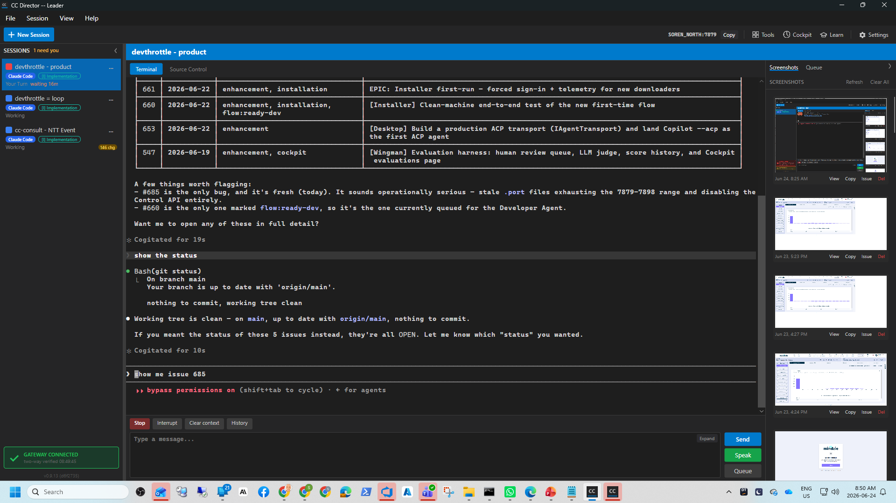

Title: PortAllocator burns a port slot per ungraceful shutdown; stale .port files exhaust 7879..7898 and disable the Control API
Pull request: 686 Branch: issue-685-portallocator-stale-reservations
QA method: Independent verification (separate context, own git worktree, own isolated slot 14 built from the PR branch, launched via the per-slot scheduled task per CLAUDE.md rule 0b). The Developer Agent report and screenshots were treated as context only, not proof.
dotnet build cc-director.sln -> Build succeeded, 0 Warning(s), 0 Error(s).D:\ReposFred\devthrottle-wt-685\local_builds\cc-director14.exe.cc-director14-launch; PID 24964, Control API self-allocated port 7880.The real reservation directory %LOCALAPPDATA%\cc-director\config\director\ports\ was seeded to reproduce the reported failure:
This is the field scenario (19 reservation files, the whole bindable range claimed by ghosts) plus the harder live-reservation case running side by side, so both halves of the fix are exercised in one run.
| # | Criterion | Expected | Actual | Result |
|---|---|---|---|---|
| 1 | With many stale .port files (dead GUIDs) and the OS ports free, a starting Director allocates a port and brings up the Control API. | Director starts, Control API answers. | Director allocated port 7880; GET /healthz returned HTTP 200 with directorId ebf39d12 (see qa-healthz.txt). |
PASS |
| 2 | A .port file whose claimed port is actually free to bind is not counted as "used by others". | Ghost reservations on free ports are skipped during the scan. | Director log shows all 18 ghosts skipped/pruned with reason "claimed port N is free to bind"; allocation then succeeded (qa-portallocator-log.txt). | PASS |
| 3 | Stale .port files are pruned so the range cannot be exhausted by ghosts over time. | Ghost files are deleted from disk on the next allocation. | Directory went from 19 files to 2 (the live 7879 reservation + the new 7880 reservation); all 18 ghost files were deleted. | PASS |
| 4 | A live reservation (port not bindable) is still respected and its file kept. | The real Director's 7879 reservation is left untouched. | File 59e99e10...port -> 7879 remained on disk after the new Director started; the log never lists it for pruning. | PASS |
| 5 | Regression test covers stale->allocation succeeds and live->respected. | Dedicated unit tests exist and pass. | 6 PortAllocatorTests pass (stale-pruned, live-kept, 19-stale field case, malformed-pruned, own-reservation-ignored, mixed live+stale). | PASS |
CcDirector.Gateway.Tests suite: 955 passed, 1 skipped (unrelated realtime dictation), 0 failed.src/CcDirector.ControlApi/PortAllocator.cs plus new tests; no architecture or security-profile change, so no docs/cencon/ drift. No blocking DT security rule affected.qa-portallocator-log.txt - PortAllocator log: 18 ghost prunes + "Allocated port 7880".qa-healthz.txt - Control API GET /healthz HTTP 200 response.qa-director-screen.png - the running slot-14 Director window with the Control API connection panel populated.